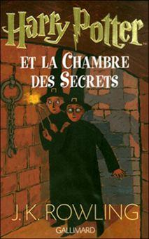
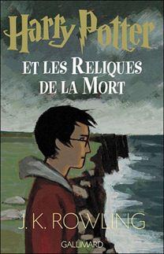

Je suis persuadé que vous allez vous demander, voyant le titre des ouvrages de ce mois-ci, « mais que viennent faire dans une revue universitaire des sciences et techniques des livres pour enfants, traitant de magie ? » Je ne suis pas sans savoir que le journal s’adresse en majorité à des scientifiques, étudiants ou enseignants. Je suis également persuadé qu’un adulte éclairé qui a un peu de bon sens tient pour billevesées qu’une baguette magique puisse se transformer en torche électrique. Une carte magique (la carte du maraudeur) sur laquelle on aperçoit des rues et des personnages figurés par des petits points lumineux déambulant dans ces rues, ne peut sortir que d’une imagination enfantine.
Vous avez raison : cette baguette magique s’appelle en réalité un « Smartphone » !
Instrument avec lequel vous pouvez tout à loisir localiser un lieu par satellite et vous y rendre, avoir une boussole, vous éclairer dans le noir, traduire une phrase, avoir le titre d’un morceau de musique en plaçant l’instrument magique devant la source sonore, parler et poser des questions à une immense banque de données et tout un tas d’applications qui n’ont d’autres définitions que celles de prodigieuses !
Harry Potter est né de l’imagination de J.K. Rowling dans les années quatre-vingt dix. La science et les technologies évoluant plus vite qu’un Éclair de feu (le plus rapide balai des sorciers connu à ce jour) Harry Potter et ses outils de sorcier se retrouvent complètement dépassés par l’évolution de la technologie ! Je suis convaincu que dans quelques laboratoires, plus ou moins secrets, on travaille aujourd’hui à fabriquer une cape d’invisibilité plus élaborée que celle d’Harry Potter ! Peut-être que dans quelque temps, le quidditch, (jeu de balle en trois dimensions) aura remplacé le football ! En attendant ces années proches, je vous invite à faire un tour de magie en compagnie de ce petit sorcier bien sympathique...
La formidable saga de J.K. Rowling, Harry Potter, éd. Gallimard, commence en 1997 avec « Harry Potter à l'école des sorciers » et se termine en 2007 avec « Harry Potter et les reliques de la mort ». L'éditeur (Gallimard pour la France) et le traducteur, Jean-François Ménard, restent les mêmes pour les sept ouvrages, ce qui permet d'apprécier l'évolution de la plume ensorcelante de l'auteur et le chiffre d'affaire des éditeurs : 450 millions d’exemplaires vendus dans le monde, les aventures d’Harry Potter sont traduites dans 75 langues ! J’avoue ne pas savoir s’il y a eu un précédent dans le milieu de l’édition.
Le tome I « Harry Potter à l’école des sorciers » est un roman pour enfants de 300 pages. On le lit pour savoir ce que lisent nos enfants. Harry Potter est un petit orphelin, élevé par son oncle et sa tante qui le traitent durement. Le cadre de l’enfant-placard est posé. Les héros sont toujours fils de roi ou... fils de personne, leur naissance est toujours plus ou moins mystérieuse. Un jour vient un géant, qui est aussi un sorcier et il emmène Harry à la gare de King's Cross de Londres, où il prendra le Poudlard Express (qui se situe sur la voie neuf trois quart) et qui le conduira jusqu'à sa nouvelle école : Poudlard. De la littérature enfantine, sans grand intérêt, mais attrayante, tout de même. Pas de quoi fouetter un chat noir une nuit de pleine lune, certes, mais le charme poétique est là, la magie opère déjà.
Le second tome, « Harry Potter et la chambre des secrets » on le chipe à ses enfants en cachette, sans se faire remarquer, pour ne pas avoir honte de lire pareils enfantillages ! Il joue sur le registre de la lutte du bien contre le mal, presque banal. Harry se fait des amis comme lui, enfants de sorciers ou enfants ayant des dons de sorcellerie, nés de parents moldus (non sorciers). Déjà la plume s'est affermie et le volume occupe 60 pages de plus.
Avec le volume trois « Harry Potter et le prisonnier d'Askaban » (Askaban : prison pour sorciers) on s'aperçoit que l'on est entré dans un roman à tiroirs construit dans l'anticipation : le temps, objet de maints ouvrages de science fiction y est traité avec une maîtrise à faire pâlir les maîtres du genre ! Un dangereux criminel, échappé d’Askaban veut tuer Harry Potter. Le suspens, digne des plus grands polards tient en haleine et l'ouvrage atteint les 500 pages. Dans les prochains on atteindra facilement les 800. Les personnages sont solides, vivants, on sent de plus en plus leurs présences autour de nous, mieux, nous sommes en affinité avec eux : ils font partie de notre quotidien, ils sont devenus des familiers.
Le volume quatre, « Harry Potter et la coupe de feu » est le pilier de l'œuvre, la charnière de la saga ; les non-initiés ne peuvent plus ouvrir au hasard un des ouvrages précédents pour commencer la formidable aventure, un retour à la case départ est indispensable pour comprendre les aventures de Harry et ses acolytes : Ron, Hermione, Neuville, les jumeaux et autres héros de cette formidable histoire qui se déroule dans l'ombre de notre monde. Ce n'est plus une lutte ordinaire du bien contre le mal qui se joue à présent dans un collège imaginaire de sorciers, mais c'est le sort du monde qui se joue entre Harry et « celui-dont-on-ne-doit-pas-prononcer-le-nom » (Voldemort). Le monde magique des sorciers interfère avec ce que, dérisoirement, nous nommons « le réel », innocents que nous sommes ! Nous sommes à mille lieux de deviner ce qui se trame dans notre dos. Car nous sommes les contemporains de Harry Potter qui vit avec nous dans notre époque, dans notre siècle. Si leur monde nous reste fermé, les sorciers peuvent pénétrer dans le nôtre et ils ne s’en privent pas. On est obligé de retenir son souffle jusqu'au tome cinq, qui décidément tarde à venir…
Avec le tome V, justement, « Harry Potter et l'Ordre du Phénix » le destin du monde a déjà changé sans que les « moldus » que nous sommes ne s'en soient aperçu ! Heureusement, Harry et ses amis sont là ! L’Ordre du Phénix, est une société secrète composée de bons sorciers, en lutte contre Voldemort et ses « mangemorts » (mauvais sorcier assujetti à Voldemort). Là, nous commençons à être concernés, car il ne s’agit plus de petites interférences entre les deux mondes, mais d’une véritable attaque contre le genre humain, les dégâts sont visibles. Le volume atteint les mille pages, trop courtes : on dévore à perdre haleine.
Dans le tome VI, « Harry Potter et le Prince de sang-mêlé » les jeux sont quasiment faits, celui-dont-on-ne-doit-pas-prononcer-le-nom n’a plus qu’un petit geste à accomplir pour devenir réellement le maître du monde, non seulement de celui des sorciers, mais du nôtre aussi ! Nous sommes à deux doigts d’une catastrophe planétaire ! Inutile de vous dire que les baguettes magiques croisent le fer dans le monde des sorciers et que les éclairs jaillissent de toutes parts. Les sorts et les maléfices sont jetés de part et d’autre, à cheval sur les balais, comme les cavaliers croisaient le fer sur leur destriers. La mort frappe les amis de Harry, les êtres qu’il aime.
Cet opus qui est peut-être le plus riche au niveau du sens, se termine sur une note de tristesse, un deuil irréparable : le grand protecteur, le révélateur de Harry à lui-même, son « analyste » est assassiné. Poudlhard va-t-il finir dans le giron de Voldemort qui a gagné en puissance ? Tout porte à le croire. Toutefois, ce crime était prévu. Cet assassinat par « Avada Kedavra » (sort mortifère) est le prix à payer qui servira de blanc seing pour infiltrer à un haut rang le camp ennemi ! Cela, votre serviteur l'avait deviné. Hé oui, Severus Rogues, qui a prononcé le maléfique irréversible, n'est pas un « Mangemort », mais un véritable membre de l'Ordre du Phénix infiltré chez l'ennemi.
Le tome VII enfin, « Harry Potter et les reliques de la mort » sans en être le meilleur, loin de là, clôture la saga. Disons même que c'est celui qui mérite le plus de critiques. L'épilogue était inutile, la bataille de Poudlhard a été conçue uniquement pour le cinéma : ce n'est pas un roman, c'est un scénario qui s'inspire de la bataille de Minas Tirith le Chef d’œuvre de Tolkien, Le Seigneur des Anneaux. Quoi qu'il en soit, le volume se dévore quand même en quelques heures. Les aventures d’Harry Potter sont terminées et quelque chose nous manquera dans l’avenir !
Le génie de JK. Rowling peut-il s'analyser ? Certes, et à l’infini. De nombreuses thèses ont été écrites sur Harry Potter en tant que phénomène éditorial et littéraire, mais le succès de l'histoire tient surtout au fait que l'auteur a réussi à recréer l'ambiance de la vie réelle, de notre vie contemporaine et quotidienne dans une dimension surnaturelle : les petits fonctionnaires étriqués du Ministère de la Magie qui ressemblent tellement à tous les fonctionnaires du monde, sont chargés de régler les problèmes causés par les sorciers avec les « moldus ». L'ambition, l'orgueil des sorciers, leurs compassions sont comparables aux nôtres. En ce vingt et unième siècle, époque à laquelle se déroule l’histoire d’Harry Potter, notre technologie n’apparaît jamais : pas d'ordinateurs ou de téléphones portables dans Harry Potter. Il faut dire que chez les sorciers, ces « technologies » existent déjà, sous un autre nom.
Sur presque 4300 pages de surnaturel, l'auteur arrive à ne pas parler de religion, on peut crier au miracle. Sauf peut-être une trahison involontaire, un lapsus « lupus », (pardon pour ce mauvais jeu de mots : Remus Lupin est professeur à Poudlard contre les forces du mal). Dans le volume VII donc, à l'enterrement de l'œil de Maugrey Fol Œil : « Harry marqua l'endroit d'une petite croix… » (P. 808). Il n'est pas précisé si cette croix est verticale, mais sur une tombe…
C'est là un détail sur lequel le plus intransigeant des laïques peut passer : n'importe quel adepte d'une religion, musulmane, juive, bouddhiste ou chrétienne peut lire Harry Potter. Même si les Noëls sont présents, il s'agit de Noëls païens, d'ambiance festive sans aucune référence religieuse.
Dieu est le grand absent de la saga ; jamais nommé mais omniprésent par la morale qui se dégage tout au long de l’œuvre. La mort elle-même conserve son caractère sacré, mystérieux et païen, même chez les sorciers. La mort reste la mort, un territoire inconnu d'où on en revient jamais. Le retour de Dumbledore s'entretenant avec Harry à la fin du tome VII ressemble plutôt à une « expérience de mort rapprochée » qu'à un véritable retour du disparu : Harry a le choix de prolonger son « expérience » ou de « redescendre ».
Une seule erreur de construction dans l'immense récit, l'origine de Hagrid (le jardinier) et la place qu'il occupe à Poudlhard dans les premiers tomes… Je vous laisse le soin de chercher ! Bref, en un mot comme en cent : il faut vraiment être un « moldu » ou un « croqmolle » (sorcier sans talent) pour se passer du plaisir qu'apporte la lecture de J.K. Rowling.
Un petit mot sur l'adaptation cinématographique : elle est parfaite ! Ce qui laisse à penser que les producteurs et metteurs en scène ont usé moult flacons de « polynectar » (Potion qui permet de prendre physiquement la forme que vous souhaitez) pour que le récit cadre aussi bien que ça aux personnages et aux actions…. Ce qui, bien sûr, ne vous dispense pas d'une lecture assidue, si vous souhaitez obtenir vos B.U.S.E.S (examens de sorcellerie) Cette lecture sera facilitée si vous êtes parents.
Je n'en dirai pas plus, car les éditions Gallimard me paient en « or de farfadet » (Cf. Tome IV, or qui disparaît au bout de quelques heures) pour la pub gratuite que je suis en train de leur faire…

Partager cette page